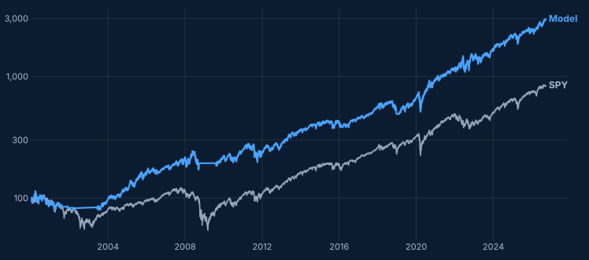
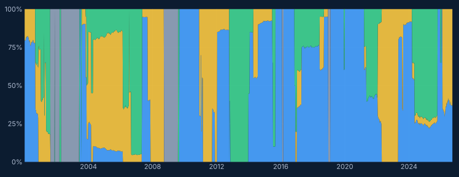

Technology
XLK
US large-cap technology companies.
TradingAlgo · Member researchUpdated September 2026
A simple rotation across three US sectors, Technology, Energy and Financials, with cash as the alternative. Each week the model reviews the past year, holds the mix that has paid best for the risk taken, and trades only when the case for change is strong.
The aim is not to forecast sectors. It is to lean, by rule, on what has recently paid best for its risk, and to step back to cash when no mix has paid at all.
Three sector funds and cash. Nothing else is held.
XLK
US large-cap technology companies.
XLE
US oil, gas and energy services companies.
XLF
US banks, insurers and other financial companies.
Treasury bills
Held when no mix of the three sectors looks attractive.
The same three steps every week.
Review the past year of returns of the three sectors, measured against what cash would have earned.
Pick the combination of Technology, Energy and Financials with the best return for the risk taken. If none has beaten cash, the answer is cash.
Ignore small shifts. The portfolio is rebalanced only when the new mix is far enough from the current one, which keeps trading low.
Simulated from January 2000 to September 2026 on daily closes with dividends reinvested, after assumed trading costs. Log scale, both lines start at 100.

Share of the portfolio in each block over time. It is either fully invested or fully in cash; the mix between sectors changes when the evidence does.

Sectors Allocation treats rotation as a rule rather than a view: a small set of building blocks, a simple test of what has worked lately, and a bias toward doing nothing unless the evidence changes.
For information and research purposes only. This is a hypothetical, back-tested simulation, not investment advice or a recommendation to buy or sell any security. Past performance does not predict future results.